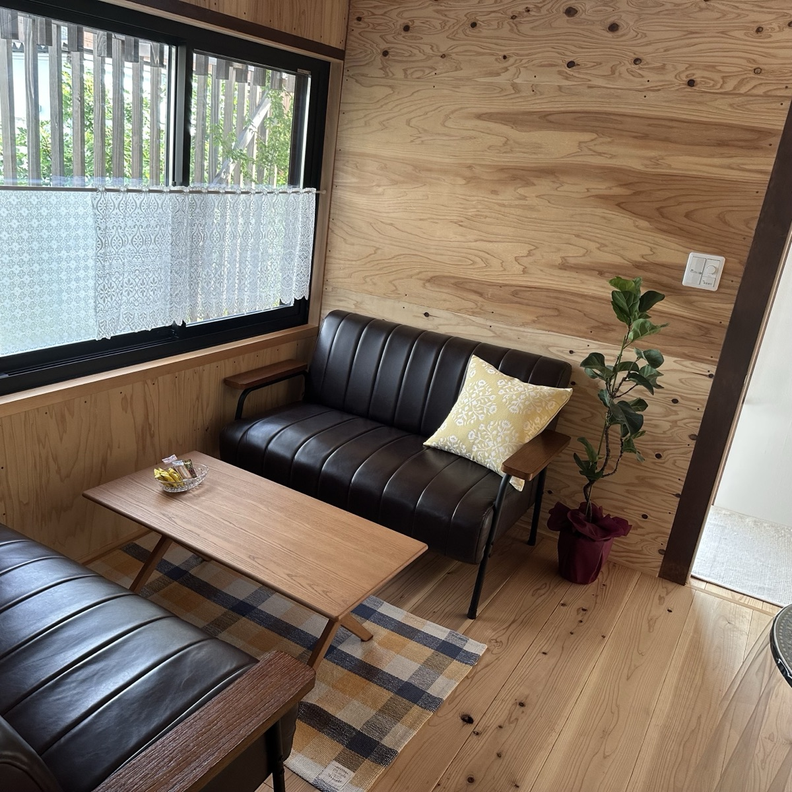

ABOUT ENZYME BATH
米ぬかを微生物の力で発酵させ、その発酵熱だけで身体を温める自然の温熱浴。ぬかの中は60〜70度でも、肌が感じるのは40度前後のやわらかな温かさです。
いちかでは、地元・高知の米ぬかを使い、毎日丁寧に手を入れて発酵を育てています。
酵素風呂について詳しく →EFFECTS
めぐりを整え、芯から温める酵素風呂。日々の小さな不調に、やさしく寄り添います。
手足の先まで届く発酵熱で、慢性的な冷えをやわらげ、温まりやすい身体へ。
たっぷりの発汗と米ぬかの保湿で、つるんと明るい素肌印象に。
普段かきにくい汗をしっかり流し、すっきりと軽い感覚へ。
深部からゆるむことで、こわばりがほどけ、心地よい休息へ。
OUR COMMITMENT
小さなお店だからこそ、ひとつひとつ手をかけて。安心して、ゆだねられる場所を。
01
香料や添加物に頼らず、地元で採れた新鮮な米ぬかだけを使用。自然そのものの温もりです。
02
発酵は生きもの。温度と状態を見ながら、毎日手を入れてベストなコンディションを保ちます。
03
他のお客様を気にせず、ご自分のペースで。ゆったりとした時間をお過ごしいただけます。
VOICE
宿毛市内・近隣からお越しいただいたお客様より。
「サウナとは全然ちがう、やさしい温かさ。冷え性であきらめていた手足まで、じんわり温まりました。」
40代女性・宿毛市
「入ったあとの肌のすべすべ感に驚き。眠りも深くなった気がします。通うのが楽しみです。」
30代女性・四万十市
「貸切でゆっくりできるのが嬉しい。スタッフさんもあたたかくて、自分へのご褒美時間です。」
50代女性・宿毛市